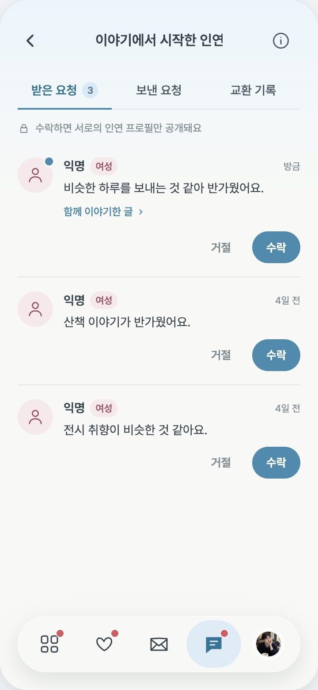

이야기에서 시작한 인연 · 새 소식 탭 표시
프로필 교환 화면의 세 탭이에요. 앱은 아직 바꾸지 않았어요. 시연 도구의 “교환 요청 받기”는 바로 앱에 넣었어요(아래 설명).
지금 어떻게 표시되나요

- 받은 요청: 기다리는 요청 수 칩만 있어요(0이면 사라짐). 새로 온 요청인지, 이미 본 요청인지는 탭에서 구분이 안 되고, 목록 안 얼굴에 작은 파란 점으로만 보여요(왼쪽 화면 첫 줄).
- 보낸 요청 · 교환 기록: 아무 표시가 없어요. 내 요청이 수락되거나 거절돼 교환 기록으로 옮겨가도 탭에서는 알 수 없어요.
- 시연 도구: “익명 커뮤니티”에 교환 요청 받기를 추가했어요. 누르면 익명의 누군가가 나에게 요청을 보내고, 위에서 “프로필 교환 요청이 왔어요” 소식 카드가 내려와요. 누르면 받은 요청으로 가요.
개선안
K1 · 받은 요청은 숫자, 기록은 점 추천
평소 · 받은 요청 2개 기다리는 중
받은 요청2보낸 요청교환 기록
새 요청이 왔을 때 · 다른 탭을 보는 중
받은 요청3보낸 요청교환 기록
내가 보낸 요청이 수락 · 거절됐을 때
받은 요청2보낸 요청교환 기록
받은 요청 탭을 열면 · 빨강이 하늘로
받은 요청3보낸 요청교환 기록
받은 요청은 기다리는 수를 그대로 두되, 아직 안 본 요청이 있으면 칩이 빨강(하단 메뉴 알림과 같은 색)이 되고, 탭을 열면 평소 색으로 돌아와요. 교환 기록은 내 요청이 수락 · 거절돼 새 결과가 생기면 글자 옆에 작은 빨간 점(6)이 붙고, 열면 사라져요. 보낸 요청은 내가 한 일이라 표시하지 않아요.
K2 · 세 탭 모두 숫자
평소
받은 요청2보낸 요청1교환 기록4
새 요청이 왔을 때
받은 요청3보낸 요청1교환 기록4
보낸 요청이 수락됐을 때
받은 요청2보낸 요청교환 기록5
세 탭에 모두 개수를 두고, 새로 생긴 쪽만 빨강으로 바꿔요. 한눈에 전체 양을 알 수 있지만, 기록 수는 계속 늘어나기만 해서 의미가 약하고 탭 줄이 무거워져요.
K3 · 숫자 없이 점만
평소
받은 요청보낸 요청교환 기록
새 요청이 왔을 때
받은 요청보낸 요청교환 기록
보낸 요청이 수락됐을 때
받은 요청보낸 요청교환 기록
새 것이 있는 탭에만 빨간 점을 붙여요. 가장 가볍지만, 받은 요청이 몇 개 기다리는지는 탭에서 사라져요.
목록 안 표시 (세 안 공통)
하늘
하늘조각여성새로
산책 이야기가 반가웠어요.
서로 프로필을 교환했어요
익명남성
전시 취향이 비슷한 것 같아요.
상대가 정중히 거절했어요
교환 기록을 열었을 때 새로 생긴 결과에는 이름 옆에 작은 “새로” 칩을 한 번 보여 줘요. 받은 요청은 지금처럼 얼굴 위 파란 점.